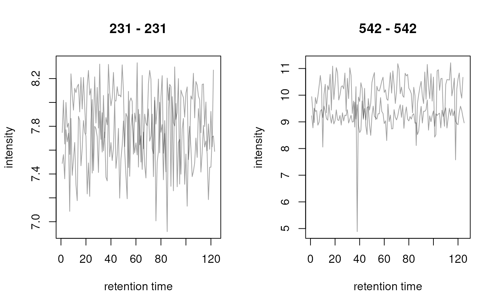
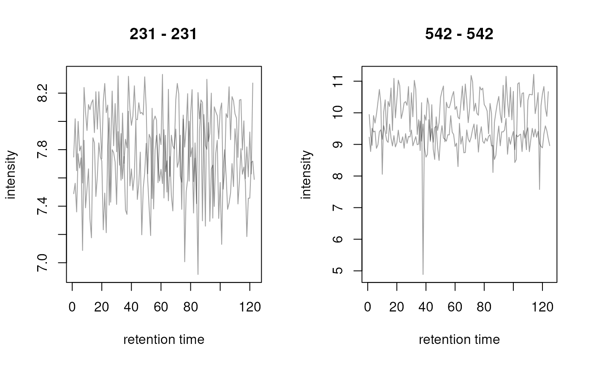

Container for multiple Chromatogram objects
Source:R/functions-MChromatograms.R, R/methods-MChromatograms.R
MChromatograms-class.RdThe MChromatograms class allows to store
Chromatogram() objects in a matrix-like
two-dimensional structure.
Usage
MChromatograms(data, phenoData, featureData, ...)
# S4 method for class 'MChromatograms'
show(object)
# S4 method for class 'MChromatograms,ANY,ANY,ANY'
x[i, j, drop = FALSE]
# S4 method for class 'MChromatograms,ANY,ANY,ANY'
x[i, j] <- value
# S4 method for class 'MChromatograms,ANY'
plot(
x,
col = "#00000060",
lty = 1,
type = "l",
xlab = "retention time",
ylab = "intensity",
main = NULL,
...
)
# S4 method for class 'MChromatograms'
phenoData(object)
# S4 method for class 'MChromatograms'
pData(object)
# S4 method for class 'MChromatograms,data.frame'
pData(object) <- value
# S4 method for class 'MChromatograms'
x$name
# S4 method for class 'MChromatograms'
x$name <- value
# S4 method for class 'MChromatograms,ANY'
colnames(x) <- value
# S4 method for class 'MChromatograms'
sampleNames(object)
# S4 method for class 'MChromatograms,ANY'
sampleNames(object) <- value
# S4 method for class 'MChromatograms'
isEmpty(x)
# S4 method for class 'MChromatograms'
featureNames(object)
# S4 method for class 'MChromatograms'
featureNames(object) <- value
# S4 method for class 'MChromatograms'
featureData(object)
# S4 method for class 'MChromatograms,ANY'
featureData(object) <- value
# S4 method for class 'MChromatograms'
fData(object)
# S4 method for class 'MChromatograms,ANY'
fData(object) <- value
# S4 method for class 'MChromatograms'
fvarLabels(object)
# S4 method for class 'MChromatograms'
rownames(x) <- value
# S4 method for class 'MChromatograms'
precursorMz(object)
# S4 method for class 'MChromatograms'
productMz(object)
# S4 method for class 'MChromatograms'
mz(object)
# S4 method for class 'MChromatograms'
polarity(object)
# S4 method for class 'MChromatograms'
bin(x, binSize = 0.5, breaks = numeric(), fun = max)
# S4 method for class 'MChromatograms'
clean(object, all = FALSE, na.rm = FALSE)
# S4 method for class 'MChromatograms'
normalize(object, method = c("max", "sum"))
# S4 method for class 'MChromatograms'
filterIntensity(object, intensity = 0, ...)
# S4 method for class 'MChromatograms,Chromatogram'
alignRt(x, y, method = c("closest", "approx"), ...)
# S4 method for class 'MChromatograms'
c(x, ...)
# S4 method for class 'MChromatograms,missing'
compareChromatograms(
x,
y,
ALIGNFUN = alignRt,
ALIGNFUNARGS = list(),
FUN = cor,
FUNARGS = list(use = "pairwise.complete.obs"),
...
)
# S4 method for class 'MChromatograms,MChromatograms'
compareChromatograms(
x,
y,
ALIGNFUN = alignRt,
ALIGNFUNARGS = list(),
FUN = cor,
FUNARGS = list(use = "pairwise.complete.obs"),
...
)
# S4 method for class 'MChromatograms'
transformIntensity(object, FUN = identity)Arguments
- data
for
MChromatograms: alistofChromatogram()objects.- phenoData
for
MChromatograms: either adata.frame,AnnotatedDataFramedescribing the phenotypical information of the samples.- featureData
for
MChromatograms: either adata.frameorAnnotatedDataFramewith additional information for each row of chromatograms.- ...
for
MChromatograms: additional parameters to be passed to thematrixconstructor, such asnrow,ncolandbyrow. ForcompareChromatograms: ignored.- object
a
MChromatogramsobject.- x
for all methods: a
MChromatogramsobject.- i
for
[:numeric,logicalorcharacterdefining which row(s) to extract.- j
for
[:numeric,logicalorcharacterdefining which columns(s) to extract.- drop
for
[:logical(1)whether to drop the dimensionality of the returned object (if possible). The default isdrop = FALSE, i.e. each subsetting returns aMChromatogramsobject (or aChromatogramobject if a single element is extracted).- value
for
[<-: the replacement object(s). Can be alistof [Chromatogram()objects or, if length ofiandjare 1, a singleChromatogram` object.- col
for
plot: the color to be used for plotting. Either a vector of length 1 or equal toncol(x).- lty
for
plot: the line type (seeplotin thegraphicspackage for more details). Can be either a vector of length 1 or of length equal toncol(x).- type
for
plot: the type of plot (seeplotfrom thegraphicspackage for more details). Can be either a vector of length 1 or of length equal toncol(x).- xlab
for
plot: the x-axis label.- ylab
for
plot: the y-axis label.- main
for
plot: the plot title. If not provided the mz range will be used as plot title.- name
for
$, the name of the pheno data column.- binSize
for
bin:numeric(1)with the size of the bins (in seconds).- breaks
For
bin:numericdefining the bins. Usually not required as the function calculates the bins automatically based onbinSizeand the retention time range of chromatograms in the same row.- fun
for
bin: function to be used to aggregate the intensity values falling within each bin.- all
for
clean:logical(1)whether all 0-intensities should be removed (all = TRUE), or whether 0-intensities adjacent to peaks should be kept (all = FALSE; default).- na.rm
for
clean:logical(1)whether allNAintensities should be removed prior to clean 0-intensity data points.- method
character(1). Fornormalise: defining whether each chromatogram should be normalized to its maximum signal (method = "max") or total signal (method = "sum"). ForalignRt: alignment methods (see documentation foralignRtin theChromatogram()help page. Defaults tomethod = "closest".- intensity
for
filterIntensity:numeric(1)orfunctionto use to filter intensities. See description for details.- y
for
alignRt: aChromatogram()object against whichxshould be aligned against.- ALIGNFUN
for
compareChromatograms: function to align chromatogramxagainst chromatogramy. Defaults toalignRt.- ALIGNFUNARGS
listof parameters to be passed toALIGNFUN.- FUN
for
transformIntensity: function to transform chromatograms' intensity values. Defaults toFUN = identity.- FUNARGS
for
compareChromatograms:listwith additional parameters forFUN. Defaults toFUNARGS = list(use = "pairwise.complete.obs").
Value
For [: the subset of the MChromatograms object. If a
single element is extracted (e.g. if i and j are of length
1) a Chromatogram() object is returned. Otherwise (if
drop = FALSE, the default, is specified) a MChromatograms
object is returned. If drop = TRUE is specified, the method
returns a list of Chromatogram objects.
Details
The MChromatograms class extends the base matrix class
and hence allows to store Chromatogram() objects in a
two-dimensional array. Each row is supposed to contain
Chromatogram objects for one MS data slice with a common
m/z and rt range. Columns contain Chromatogram objects from the
same sample.
Object creation
MChromatograms are returned by a chromatogram() function from an MSnExp
or OnDiskMSnExp. Alternatively, the MChromatograms constructor function
can be used.
Data access
$and$<-: get or replace individual columns of the object's phenodata.colnamesandcolnames<-: replace or set the column names of theMChromatogramsobject. Does also set therownamesof thephenoData.fData: return the feature data as adata.frame.fData<-: replace the object's feature data by passing adata.frame.featureData: return the feature data.featureData<-: replace the object's feature data.featureNames: returns the feature names of theMChromatogramsobject.featureNames<-: set the feature names.fvarLabels: return the feature data variable names (i.e. column names).isEmpty: returnsTRUEif theMChromatogramsobject or all of itsChromatogramobjects is/are empty or contain onlyNAintensities.mz: returns the m/z for each row of theMChromatogramsobject as a two-columnmatrix(with columns"mzmin"and"mzmax").pData: accesses the phenotypical description of the samples. Returns adata.frame.pData<-: replace the phenotype data.phenoData: accesses the phenotypical description of the samples. Returns anAnnotatedDataFrameobject.polarity: returns the polarity of the scans/chromatograms:1,0or-1for positive, negative or unknown polarity.precursorMz: return the precursor m/z from the chromatograms. The method returns amatrixwith 2 columns ("mzmin"and"mzmax") and as many rows as there are rows in theMChromatogramsobject. Each row contains the precursor m/z of the chromatograms in that row. An error is thrown if the chromatograms within one row have different precursor m/z values.productMz: return the product m/z from the chromatograms. The method returns amatrixwith 2 columns ("mzmin"and"mzmax") and as many rows as there are rows in theMChromatogramsobject. Each row contains the product m/z of the chromatograms in that row. An error is thrown if the chromatograms within one row have different product m/z values.rownames<-: replace the rownames (and featureNames) of the object.
Data subsetting, combining and filtering
[subset (similar to amatrix) by row and column (with parametersiandj).[<-replace individual or multiple elements.valuehas to be either a singleChromatogramobhect or alistofChromatogramobjects.cconcatenate (row-wise)MChromatogramobjects with the same number of samples (columns).filterIntensity: filter eachChromatogram()object within theMChromatogramsremoving data points with intensities below the user provided threshold. Ifintensityis anumericvalue, the returned chromatogram will only contain data points with intensities >intensity. In addition it is possible to provide a function to perform the filtering. This function is expected to take the inputChromatogram(object) and to return a logical vector with the same length then there are data points inobjectwithTRUEfor data points that should be kept andFALSEfor data points that should be removed. See thefilterIntensitydocumentation in theChromatogram()help page for details and examples.
Data processing and manipulation
alignRt: align all chromatograms in anMChromatogramsobject against the chromatogram specified withy. See documentation onalignRtin theChromatogram()help page.bin: aggregates intensity values of chromatograms in discrete bins along the retention time axis. By default, individualChromatogramobjects of one row are binned into the same bins. The function returns aMChromatogramsobject with binned chromatograms.clean: removes 0-intensity data points. Either all of them (withall = TRUE) or all except those adjacent to non-zero intensities (all = FALSE; default). Seeclean()documentation for more details and examples.compareChromatograms: calculates pairwise similarity score between chromatograms inxandyand returns a similarity matrix with the number of rows corresponding to the number of chromatograms inxand the number of columns to the number of chromatograms iny. Ifyis missing, a pairwise comparison is performed between all chromatograms inx. See documentation oncompareChromatogramsin theChromatogram()help page for details.normalize,normalise: normalises the intensities of a chromatogram by dividing them either by the maximum intensity (method = "max") or total intensity (method = "sum") of the chromatogram.transformIntensity: allows to manipulate the intensity values of all chromatograms using a user provided function. See below for examples.
Data visualization
plot: plots aMChromatogramsobject. For each row in the object one plot is created, i.e. allChromatogram()objects in the same row are added to the same plot. Ifnrow(x) > 1the plot area is split intonrow(x)sub-plots and the chromatograms of one row are plotted in each.
See also
Chromatogram()] for the class representing chromatogram data. [chromatogram()] for the method to extract a MChromatogramsobject from aMSnExporOnDiskMSnExp object. [readSRMData() for the function to read chromatographic data
of an SRM/MRM experiment.
Examples
## Creating some chromatogram objects to put them into a MChromatograms object
ints <- abs(rnorm(25, sd = 200))
ch1 <- Chromatogram(rtime = 1:length(ints), ints)
ints <- abs(rnorm(32, sd = 90))
ch2 <- Chromatogram(rtime = 1:length(ints), ints)
ints <- abs(rnorm(19, sd = 120))
ch3 <- Chromatogram(rtime = 1:length(ints), ints)
ints <- abs(rnorm(21, sd = 40))
ch4 <- Chromatogram(rtime = 1:length(ints), ints)
## Create a MChromatograms object with 2 rows and 2 columns
chrs <- MChromatograms(list(ch1, ch2, ch3, ch4), nrow = 2)
chrs
#> MChromatograms with 2 rows and 2 columns
#> 1 2
#> <Chromatogram> <Chromatogram>
#> [1,] length: 25 length: 19
#> [2,] length: 32 length: 21
#> phenoData with 0 variables
#> featureData with 0 variables
## Extract the first element from the second column. Extracting a single
## element always returns a Chromatogram object.
chrs[1, 2]
#> Object of class: Chromatogram
#> length of object: 19
#> from file:
#> mz range: [NA, NA]
#> rt range: [1, 19]
#> MS level: 1
## Extract the second row. Extracting a row or column (i.e. multiple elements
## returns by default a list of Chromatogram objects.
chrs[2, ]
#> MChromatograms with 1 row and 2 columns
#> 1 2
#> <Chromatogram> <Chromatogram>
#> [1,] length: 32 length: 21
#> phenoData with 0 variables
#> featureData with 0 variables
## Extract the second row with drop = FALSE, i.e. return a MChromatograms
## object.
chrs[2, , drop = FALSE]
#> MChromatograms with 1 row and 2 columns
#> 1 2
#> <Chromatogram> <Chromatogram>
#> [1,] length: 32 length: 21
#> phenoData with 0 variables
#> featureData with 0 variables
## Replace the first element.
chrs[1, 1] <- ch3
chrs
#> MChromatograms with 2 rows and 2 columns
#> 1 2
#> <Chromatogram> <Chromatogram>
#> [1,] length: 19 length: 19
#> [2,] length: 32 length: 21
#> phenoData with 0 variables
#> featureData with 0 variables
## Add a pheno data.
pd <- data.frame(name = c("first sample", "second sample"),
idx = 1:2)
pData(chrs) <- pd
## Column names correspond to the row names of the pheno data
chrs
#> MChromatograms with 2 rows and 2 columns
#> 1 2
#> <Chromatogram> <Chromatogram>
#> [1,] length: 19 length: 19
#> [2,] length: 32 length: 21
#> phenoData with 2 variables
#> featureData with 0 variables
## Access a column within the pheno data
chrs$name
#> [1] "first sample" "second sample"
## Access the m/z ratio for each row; this will be NA for the present
## object
mz(chrs)
#> mzmin mzmax
#> [1,] NA NA
#> [2,] NA NA
## Data visualization
## Create some random Chromatogram objects
ints <- abs(rnorm(123, mean = 200, sd = 32))
ch1 <- Chromatogram(rtime = seq_along(ints), intensity = ints, mz = 231)
ints <- abs(rnorm(122, mean = 250, sd = 43))
ch2 <- Chromatogram(rtime = seq_along(ints), intensity = ints, mz = 231)
ints <- abs(rnorm(125, mean = 590, sd = 120))
ch3 <- Chromatogram(rtime = seq_along(ints), intensity = ints, mz = 542)
ints <- abs(rnorm(124, mean = 1200, sd = 509))
ch4 <- Chromatogram(rtime = seq_along(ints), intensity = ints, mz = 542)
## Combine into a 2x2 MChromatograms object
chrs <- MChromatograms(list(ch1, ch2, ch3, ch4), byrow = TRUE, ncol = 2)
## Plot the second row
plot(chrs[2, , drop = FALSE])
 ## Plot all chromatograms
plot(chrs, col = c("#ff000080", "#00ff0080"))
## Plot all chromatograms
plot(chrs, col = c("#ff000080", "#00ff0080"))
 ## log2 transform intensities
res <- transformIntensity(chrs, log2)
plot(res)

## log2 transform intensities
res <- transformIntensity(chrs, log2)
plot(res)
